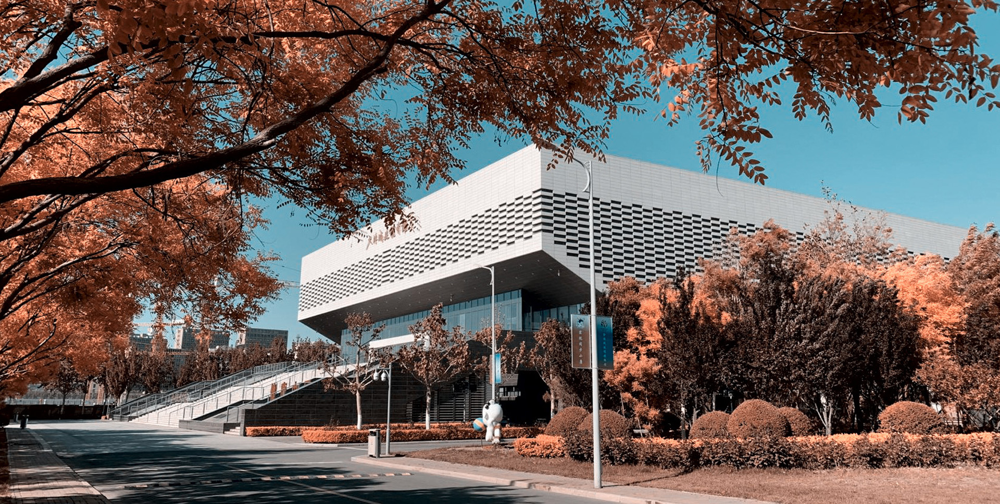

秋日 / 教学楼前重德重能 · 善学善建 · 发展城市科学 · 培育建设人才 ·
01
为什么喜欢这里
城大不只是一组建筑，
也是我们共同生活的坐标。
我喜欢中心湖的风，也喜欢图书馆里安静翻页的声音。喜欢春天绕远路去看海棠，也喜欢在体育场迎着晚风再跑一圈。
这里教会我的，不只是怎样理解一座城市，也是在一次次实践中，把想法认真地建起来。
四个章节
沿着我的日常，认识天城大
从看得见的风景，到慢慢懂得的精神。每一页，都是我在校园里真实感受到的一部分。

八秒校园影像
从春日花开，走到夜色亮起
短片由本网站的校园照片剪辑而成。按下播放，让四个时刻在同一段时间里相遇。
“校园真正留给我们的，往往是那些不起眼、却会忽然想起的日常。”
写下一句城大印象 →